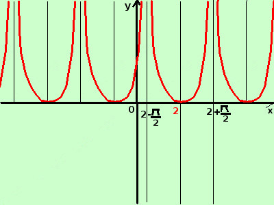

|
sviluppo Data la seguente funzione costruitene approssimativamente il grafico y = tang |x - 2| per semplicita', essendo la tangente una funzione periodica, consideriamo la determinazione della funzione tangente da -π/2 a +π/2 Per ottenere l'intervallo poniamo x-2 = -π/2 → x = 2-π/2 x-2 = +π/2 → x = 2+π/2 quindi lavoriamo nell'intervallo 2-π/2; 2+π/2 poi ripeteremo il grafico negli intervalli adiacenti ricordo che π vale circa 3,14 unita' del piano, quindi grosso modo disegneremo da 0,5 a 3,5 Non coinvolgendo il modulo tutta la funzione utilizzo la definizione di modulo ed ottengo 
per 2≥x> 2+π/2 disegno y= tang(x-2) per 2-π/2>x> 2disegno la funzione y=tang(2-x) Disegno la curva (in rosso) e la ripeto per intervalli di ampiezza π Da notare che, se il modulo coinvolge l'argomento x-2 di una funzione, allora il grafico e' simmetrico rispetto ad un asse verticale, in questo caso l'asse e' la retta x=2: infatti dovendo considerare per il modulo sempre valori positivi avremo sempre gli stessi valori per y |